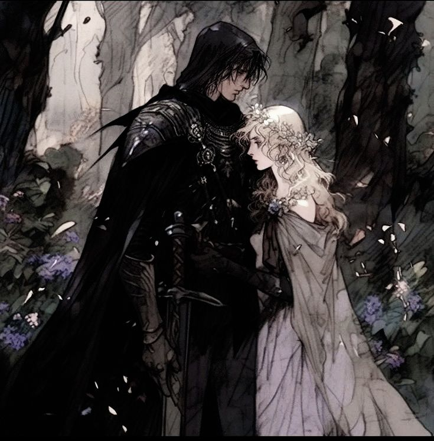

Perséfone era hija de Deméter; diosa de la naturaleza y la agricultura, y era también muy hermosa. Solía dar paseos en soledad por los campos que, en ese tiempo, estaban llenos de flores todo el año, porque no existían ni el frío ni el hambre.
Cierto día, Perséfone estaba recostada en el pasto cuando oyó unos pasos muy cerca. Apenas se incorporó, vio la figura de Hades, el dios del Inframundo, quien la raptó y la llevó a su reino de tinieblas para hacerla su esposa. La madre, al advertir que su hija no regresaba, salió a buscarla. Recorrió todos los lugares posibles donde podría encontrarla y preguntó por ella a quienes se cruzaban en su camino. Sin embargo, nadie tenía noticias sobre la joven. Hasta que el Sol se apiadó de su dolor y le contó lo sucedido. Deméter fue en busca de Zeus, padre de todos los dioses, para que obligara a Hades a devolverla. Pero Zeus, que conocía muy bien el carácter de su hermano, no quería tener problemas con él.
Deméter se enfureció por el desinterés de Zeus y le juró que, mientras no le devolvieran a su hija, no iba a hacer crecer nada sobre la tierra.

De manera que, a los pocos días, todo se había convertido en un verdadero desierto. Finalmente, Zeus no tuvo otra alternativa que intervenir; mas cuando descendió al Inframundo a pedir la libertad de Perséfone, Hades le comunicó que eso era imposible, porque la joven ya había comido el fruto prohibido, la granada, y todos sabían que quien comiera de esa fruta no podía volver al reino de los vivos. A pesar de esto, tanto le rogó Zeus que, por fin, llegaron a un acuerdo: Perséfone pasaría seis meses en el mundo de los muertos, como la esposa de Hades, y seis meses volvería a la tierra para estar con su madre.
Desde entonces, durante el tiempo en que Deméter está con su hija, el suelo se vuelve fértil y todo reverdece, pero cuando Perséfone vuelve al Inframundo, su madre se entristece y nada deja crecer sobre la faz de la tierra.